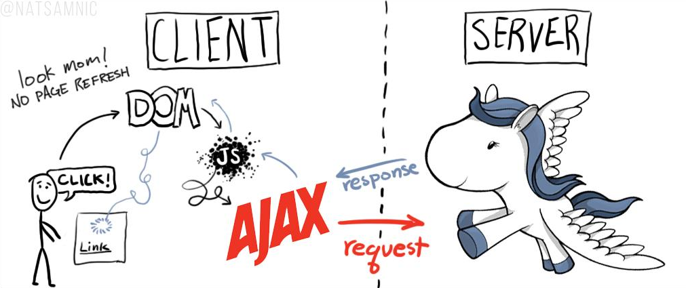

Intro fun & speedé à Python
29/10/2015
Intro
- Tim, Game developper
- "Python, not for me"
- Deux ans
- Deux bières
Python not in the browser but everywhere!
Python on the web

* beaucoup d'entreprises
Everywhere else
- sysadmin (linux distribs)
- desktop app
- big data / science
- 3d
How ?
Python is fast for you !
You know python !
def filter(values, max):
results = list()
for val in values:
if val < max:
results.append(val)
return results
class Test(object):
def do_something(self, a, b):
return a + bEasy to learn, read & write
“I came to Python (...) because it was the best pseudocode. Python has the edge (with a large number of students) when the main goal is communication, not programming per se.”
“Python has the philosophy of making sensible compromises that make the easy things very easy, and don't preclude too many hard things.” Norvig
- only in two ends.
First step
- get python
- get pip & venv ** pypi
- get ipython
- Experiment & read a lot of code
- Communicate
Semantics
- everything is an object
- only names, values
- runtime is your friend (repl, no compilation)
- repl
Fractal & setup

Let's do it!
- requirements.txt
- setup
- fractal
- best practice
Web Stuff
- a bit of http
- wsgi
- flask, bottle, django
- sqlalchemy
- celery
Flask in a slide
from flask import Flask
app = Flask(__name__)
@app.route('/')
def index():
return "hello world"
if __name__ == "__main__":
app.run(host="0.0.0.0", debug=True)Except all the others!
JS : celui qui s'en fout
- arguments
- types
- context (this)
- no class, no module, etc.
In [48]: "1.0" + 1
---------------------------------------------------------------------------
TypeError Traceback (most recent call last)
/home/lionel/<ipython-input-48-6f0b01de9b7a> in <module>()
----> 1 "1.0" + 1
TypeError: cannot concatenate 'str' and 'int' objectsC#/Java : l'administration soviétique
- utile dans des projets critiques
Un vrai design de langage
- list comprehension
- magic method
- decorator
- iterator
Vers l'infini et au delà
- cython
- numpy, opengl
- opencv
- ast manipulation
Conclusion
- partout
- rapide
- simple
- utile
Merci à
- @dungeon_dave
- @francois_jourde
- dfi
- @porteneuve
- l'équipe BdN
Questions
Secret
pandoc -t html5 --template=template-revealjs.html \
--standalone --section-divs \
--variable theme="beige" \
--variable transition="linear" \
--include-in-header=css/specific.css \
slides.md -o slides.htmlpandoc --slide-level=2 -t html5 --template=template-revealjs.html --standalone --section-divs --variable theme="default" --variable transition="concave" "%" -o "%".html
pandoc -s -S -t revealjs test.md -o test.html --slide-level 2